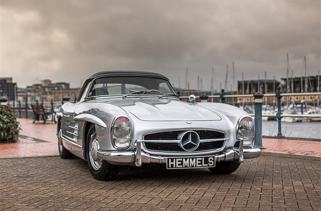
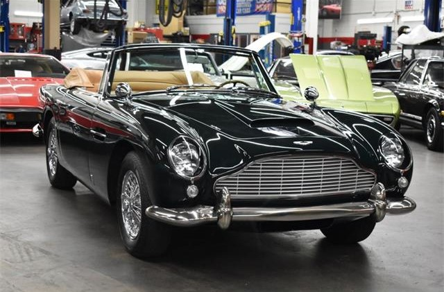
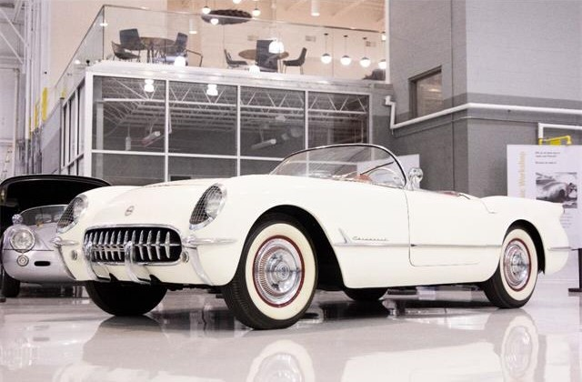
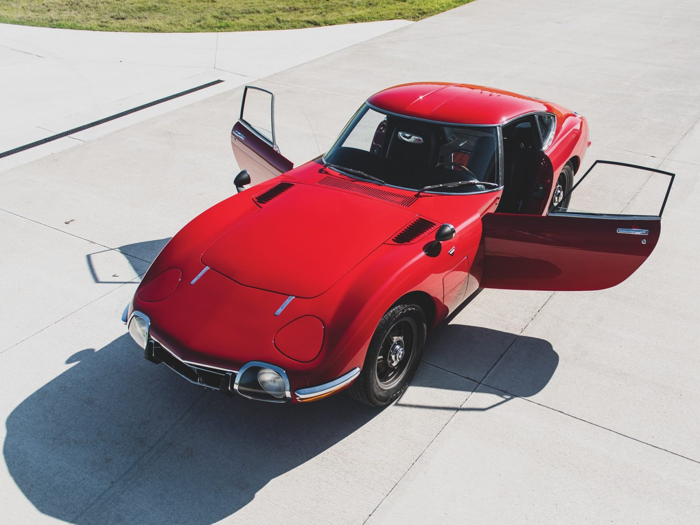

1957 Mercedes 300SL Gullwing
Before 1954, Mercedes was not selling the 300SL in America, and they were not going to start soon. It took the effort of one Mercedes lover and importer to get them to change their mind. When the 300SL Gullwing arrived in America, it was so pretty to behold, and the American population loved it.
$200,000
1960s Jaguar E-Type
Enzo Ferrari referred to this car as the most beautiful car ever made, and sure it fits the description. If you are interested in only one sports car with the curves, the Jaguar E-Type is your perfect pick. This is a pretty classic sports car that you can drive today – it still has the vigor, and it breaks better than many cars of its era.
$120,000

Aston Martin DB5
If you love James Bond, then you know how pretty this ride is. It has appeared in many bond movies than any other car. And if it is beautiful enough for James Bond, then it’s pretty enough for us. The one used by Sean Connery in the 1964 Bond film, Goldfinger is the most astonishing of all DB5 classics.
$150,000

1953 Chevrolet Corvette
The first-generation Corvette proved that America could produce a fast and curvy machine with the guts to compete with the best sports cars in the world. It put America on the map. It is astonishing in design and performance as well. The Corvette had fuel-injected engines that made the Corvettes extremely powerful and adorable.
$260,000

1956 BMW 507
This less famous BMW roadster was produced between 1956 and 1959. BMW intended to export the 507 to the US in bulk, but the car was a little too expensive. It was worth the price. The BMW 507 featured brilliant aesthetics that could make anyone who cared less about the heft price make a buying decision.
$2,500,000

1949 Rolls-Royce Dawn Drophead
The 1949 Rolls-Royce Dawn Drophead had a minimal life span of only five years, which might be one reason why its beauty has never faded. Its design was based on the first car Rolls-Royce built after the war, and its name was supposed to announce Rolls-Royce place in the new dawn, or rather the modern era in the world.
$3,520,000

1955 Ford Thunderbird
The 1955 Ford Thunderbird was a two-seat convertible that was built with the American beauty in mind. It was built upon the bespoke heritage of the 1930s and featured a 292cu, 4.8L, V8 engine.
$60,000

1969 Toyota 2000G
The Toyota 2000GT is a limited-edition front-engine sports car. It is a two-seat hardtop that was born as a result of Toyota – Yamaha collaboration. If you look at it and you see a Bond beauty, it is because Daniel Craig voted it as his favorite Bond car of all time.
$1,000,000

1969 Dodge Charger
If there is an American car that will never go out of fashion is the 1969 Dodge Charger. It has a fantastic fastback look and the American beauty all-round it. One outstanding feature is its aerodynamic body shape that is just as muscular. It may not get the billing that the Mustangs get, but the car is undoubtedly a figure of beauty.
$120,000